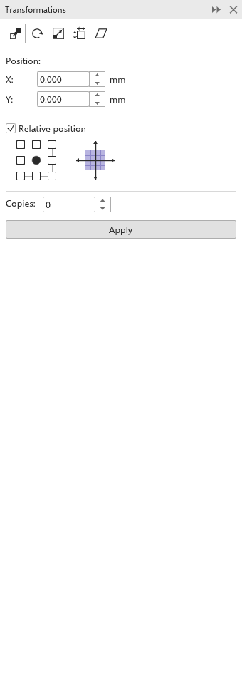

Mover, escalonar, girar e inclinar
Você pode transformar objetos arrastando-os com a ferramenta Seleção (veja Selecionar objetos), digitando valores na barra de propriedades, com a ferramenta Transformação livre ou, com precisão, com o painel Transformações.
O painel Transformações
Abra o painel com Objeto > Transformações, ou com Alt+F7 (Posição), Alt+F8 (Girar), Alt+F9 (Escala e espelhamento) e Alt+F10 (Tamanho). Os botões no alto escolhem uma de cinco páginas.

Toda página termina com o ponto de referência, uma grade 3 por 3 que escolhe o ponto da seleção que é posicionado, que serve de eixo de rotação ou que fica parado (o centro de início), Cópias e Aplicar. As distâncias ficam nas unidades de desenho, os ângulos em graus (sentido anti-horário), as escalas em porcentagem.
Para transformar a seleção:
- Escolha uma página e digite os valores.
- Escolha o ponto de referência.
- Defina Cópias: 0 altera a própria seleção; um número acima de 0 deixa a seleção como está e acrescenta esse número de cópias, cada uma transformada uma vez mais que a anterior. As cópias são um passo de desfazer, e a última cópia passa a ser a seleção, então outro Aplicar continua a partir dali.
- Clique em Aplicar.
Posição
X e Y movem a seleção. Com Posição relativa ativada (de início), são uma distância a deslocar; desativada, são para onde vai o ponto de referência, a partir da origem da régua. Com Posição relativa ativada, a grade escolhe uma direção: um lado ou um canto define a distância como o tamanho da seleção, então cada cópia fica logo ao lado da anterior.
Girar
Digite o ângulo e o Centro em torno do qual girar. Com Centro relativo ativado (de início), o centro conta a partir do ponto de referência; desativado, a partir da origem da régua.
Escala e espelho
X e Y escalonam em porcentagem (100% de início). Espelhar horizontalmente e Espelhar verticalmente viram a seleção. Proporcional mantém as duas escalas iguais.
Tamanho
L e A definem a largura e a altura da seleção. Proporcional mantém as proporções.
Inclinar
X e Y inclinam a seleção em ângulos. Com Usar ponto de ancoragem ativado, o ponto de referência fica parado; desativado, o centro fica parado.
A ferramenta Transformação livre
A ferramenta Transformação livre, no submenu Seleção, transforma a seleção em torno do ponto onde você pressiona. Escolha um modo na barra de propriedades:
- Rotação livre (de início): gira a seleção em torno do ponto pressionado.
- Reflexão em ângulo livre: espelha a seleção pela linha que vai do ponto pressionado ao ponteiro; mover o ponteiro gira essa linha.
- Escala livre: escalona em torno do ponto pressionado.
- Inclinação livre: o movimento horizontal inclina na horizontal, o vertical na vertical.
Mantenha Alt pressionado para escalonar, Ctrl para inclinar ou Shift para refletir em um arraste, qualquer que seja o modo. Com Aplicar à duplicata ativado, o clique faz uma cópia e o arraste transforma a cópia, deixando o original como estava. A barra de propriedades também tem os campos de posição, tamanho, escala, ângulo e espelho.
Desfazer transformações
Objeto > Limpar transformações devolve os objetos selecionados a como eram antes de serem escalonados, girados ou inclinados.
O painel Coordenadas
O painel Coordenadas desenha um objeto a partir de coordenadas digitadas, ou remodela o selecionado, com uma prévia tracejada no desenho. Abra-o em Janela > Painéis.

- Escolha o tipo de objeto com os botões no alto: retângulo ou quadrado, elipse ou círculo, polígono ou polígono regular, estrela, estrela complexa, linha de 2 pontos ou curva de vários pontos.
- Digite os valores:
- retângulos e elipses: a posição do ponto de origem (escolhido em uma grade 3 por 3), a largura e a altura, o ângulo de rotação e os cantos da caixa delimitadora enquanto o ângulo for 0;
- quadrados e círculos: a posição, o lado ou o diâmetro e o ângulo;
- polígonos e estrelas: o número de pontas ou lados, a nitidez, o ângulo e o círculo onde as pontas ficam;
- polígonos regulares: o número de lados, o comprimento de um lado, o ângulo e o centro;
- linhas de 2 pontos: o ponto inicial e o final, ou o comprimento e o ângulo;
- curvas de vários pontos: a lista de pontos, com botões para acrescentar e excluir pontos e para fechar a curva.
- Em vez de digitar, clique em um botão com ponteiro e alvo e clique ou arraste no desenho para definir esse valor. Um clique com o botão direito cancela.
- Clique em Criar objeto para acrescentá-lo, ou em Substituir objeto para remodelar o retângulo, a elipse, o polígono ou a curva selecionada, mantendo o preenchimento, o contorno, o nome e o lugar.
As posições contam a partir da origem da régua, nas unidades de desenho.